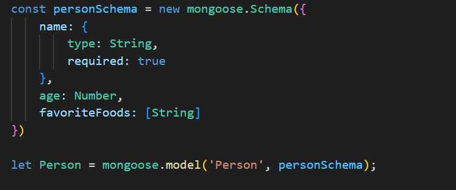

MONGOOSE AND MONGODB
We setupt the ATLAS DB, we get a URI string, copy that it is the authenticating URL for us.
MAKE SURE THAT YOU ARE ALLOWED TO CONNECT TO THAT DATABSE FORM ANYWHERE. IF YOU DONT WANT TO GET CONNECTED FROM ANYWHERE, THEN MAKE SURE YOUR IP IS CORRECTLY ADDED IN NETWORK ACCESS.
CRUD
Crud stands for CREATE, READ, UPDATE, DELETE.
These are the basic operations that we can perform on a database.
1. IN REALTIME SERVER, TEH INTERACTION WITH DATABSE HAPPENS IN HANDLER METHODS
done() - functions is a callback function that tells that we can procceed after asyncronous operation such as insert, update, delte, are completed.
On success: done(null,data)
OR
On Error: done(err)
/* Example */ const someFunc = function(done) { //... do something (risky) ... if (error) return done(error); done(null, result); };
SCHEMA:
Schema is used to define what schema we need, we can create that by modelling.
Basically, what we are doing here is: creating a obj of personSchema whcih creates a schema object of mongoDB.
then, we define our schema inside it.

At end, we model that schema to Person.
Now we can create person object in db.
CREATE
Create:

Creating a new entry for Person with the defined schema.
at end, we are calling the objectname.save wherein we are storing that particular object in the databse.
CREATE: Multiple Objects at once
Creating many records at once using the model.create()
it takes an array of data.
accepts parameter and handler fucntion same as model.save()